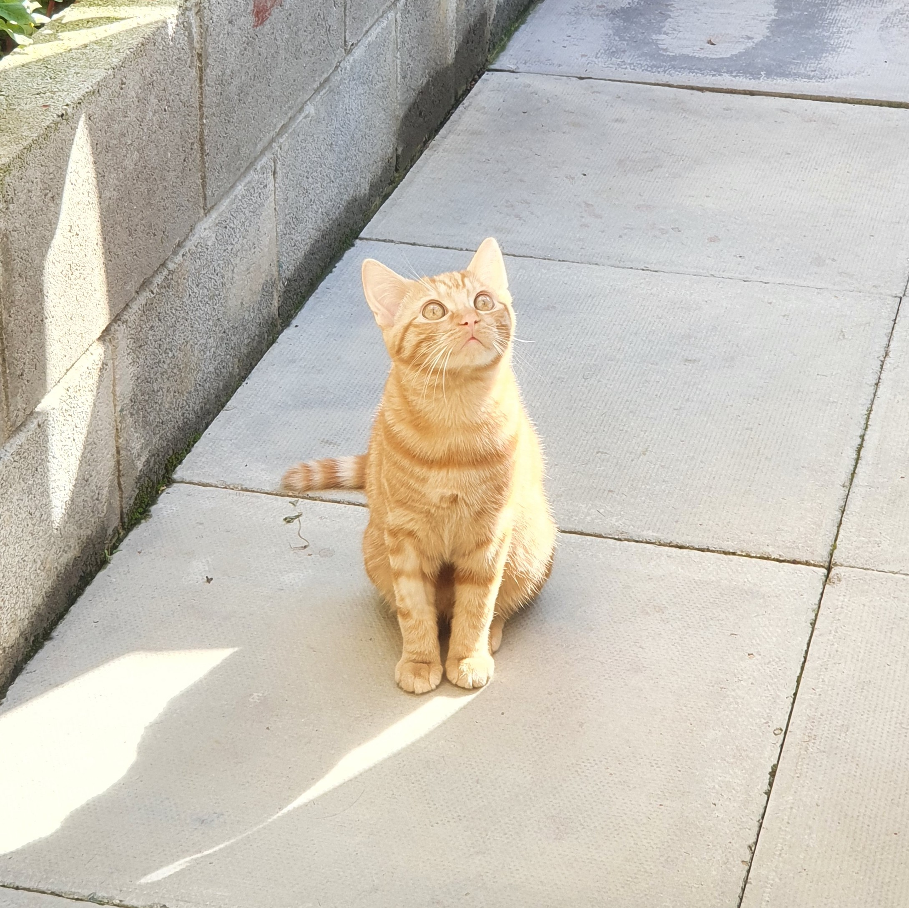

Front-end dev
Sir John Cass Secondary
September 2012 – July 2018
| GCSE | Grades |
|---|---|
| Mathematics | 6 |
| English Language | 4 |
| English Literature | 7 |
| Biology | 7 |
| Chemistry | 5 |
| Physics | 5 |
| Religious Education | 6 |
| Geography | 4 |
| Spanish | 4 |
| Psychology | C |
| IT (BTEC Level 2) | D* |
Sir John Cass Sixth form
September 2018 – August 2020
Health and Social care(BTECH Level 3)
D*D*D
City University of London
October 2021 - September 2025
Computer Science Enthusiast
I am a hard-working and motivated student with a passion for learning new skills. I am currently studying Computer Science at University as i have discovered a new passion and hobby for coding, I am learning Python, C# and C++ as well as HTML
Places I've Worked
My Skills
My Technical Skills
| Html | ★★★★☆ |
|---|---|
| Css | ★★★☆☆ |
| JavaScript | ★★★☆☆ |
| Python | ★★★☆☆ |